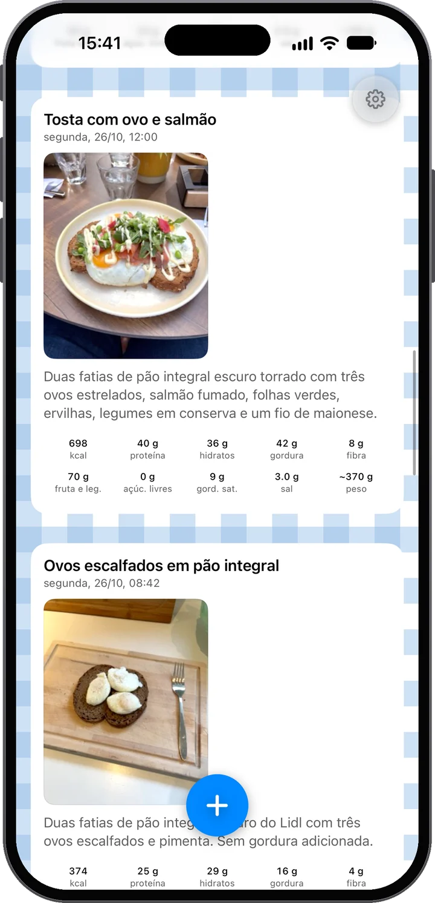
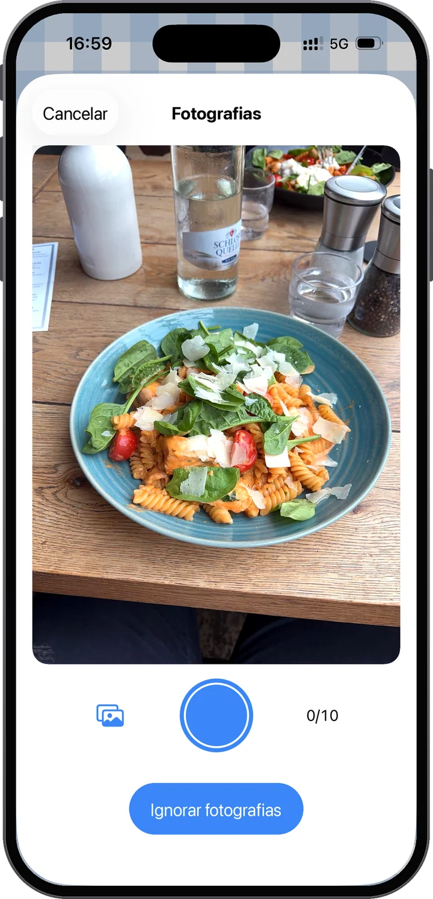
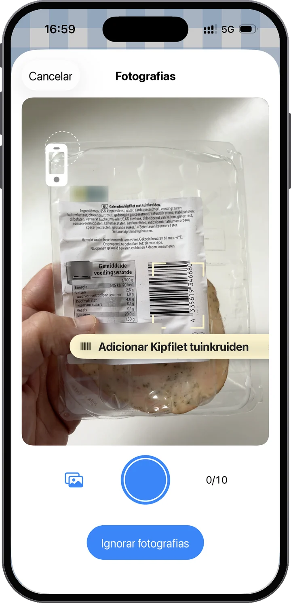
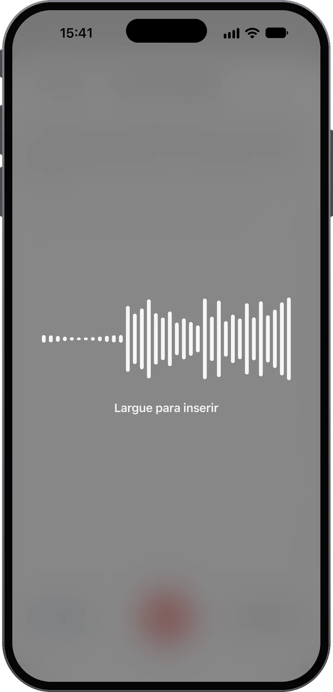
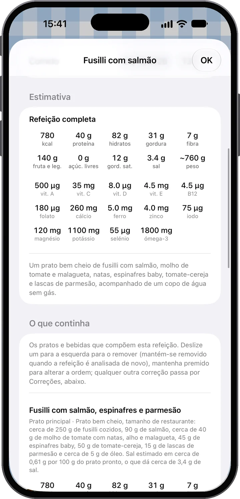
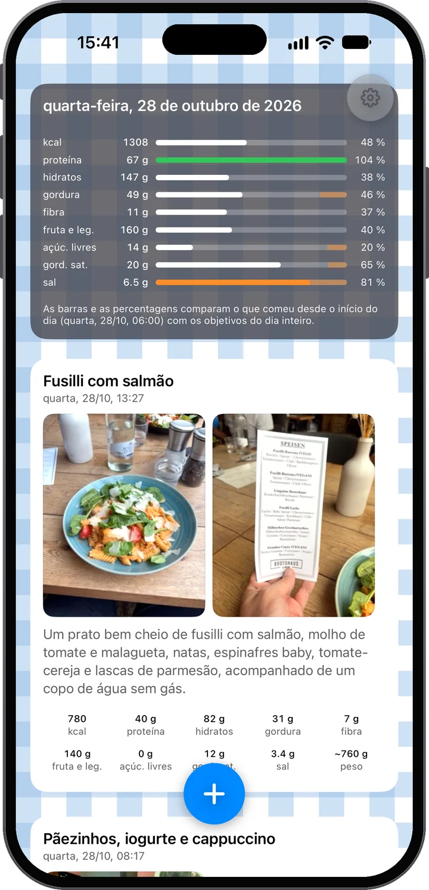
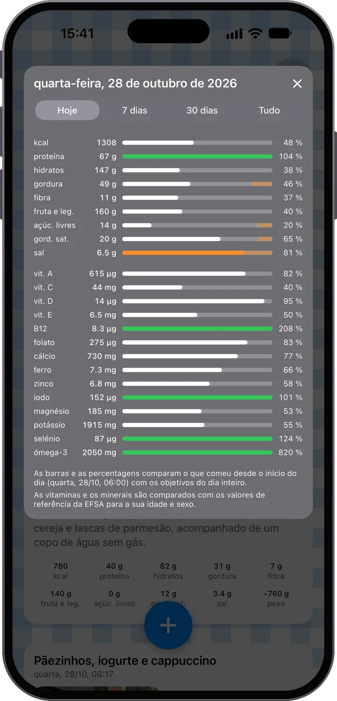

Veja-a. Entenda-a.
Fotografe a sua refeição e o Food Moments transforma-a num feed do seu dia: primeiro as fotos, logo por baixo o que tem realmente. Diga o que a foto não mostra — e veja onde está o seu dia antes da próxima refeição.

Quase nenhum esforço — e muita compreensão em troca.
Fotografe a sua comida — uma foto ou várias. Depois acrescente contexto: escreva uma nota ou mantenha o microfone premido e fale. «Dois ovos estrelados e o pãozinho» é tudo o que é preciso.
A refeição é analisada por si: energia, proteína, hidratos, gordura, fibra, fruta e legumes, açúcares livres e sal, prato a prato, e diz com franqueza quão certa está — e veja como se encaixa no seu dia.
Ao longo do dia, o seu feed enche-se e as barras do dia avançam. Vê como o seu dia alimentar está a evoluir e onde está — antes de escolher a próxima refeição, não depois.
Portou-se bem o dia todo? As suas barras mostram-no. Então coma a sobremesa — e sinta-se bem com isso: continua dentro do objetivo, e são os seus próprios dados a dizê-lo, não um palpite.

Primeiro, as fotos
A foto é a fonte principal. A análise lê os pratos e as porções — até um rótulo nutricional ou um código de barras, se aparecer na imagem. E não tem de ser uma só foto: uma refeição pode ter até dez. Vai cozinhar hoje? Fotografe os ingredientes à medida que avança e depois o prato final — a análise junta tudo.

Ou leia o código de barras
Aponte a câmara a um código de barras e o Food Moments encontra o produto com a tabela nutricional, sem foto. Leia vários produtos e tornam-se uma refeição; junte uma foto do que cozinhou e a análise usa os valores exatos do rótulo. Dados de produto do Open Food Facts.

Depois, as suas palavras — à sua maneira
Muitas vezes as fotos já chegam. Quando não chegam — o que levou o batido, quanto da frigideira comeu realmente — acrescente contexto nas suas próprias palavras. Se gosta de escrever, escreva. Mas experimente o microfone: o ditado corre nos mais recentes modelos de voz, coloca as suas palavras na nota um instante depois de soltar o botão e aguenta-se mesmo numa rua barulhenta. Seja como for, as suas palavras valem sempre mais do que a foto — a app ouve-o a si.
Salada de frango, uma fatia de pão com manteiga e meio copo de sumo de laranja.
Os pratos e bebidas que compõem a refeição. Deslize para remover um, mantenha premido para reordenar — qualquer outra correção passa pelo Feedback.
A comida era clara; a quantidade teve de ser avaliada pelas fotografias. Tome os números como aproximados e não exatos — dizer a quantidade torna-os mais precisos.
Nutrição para lá das calorias
Cada Food Moment é decomposto como numa ementa — cada prato e bebida com a sua porção e os seus números, somados em totais: energia, proteína, hidratos, gordura, fibra, fruta e legumes, açúcares livres, sal e um peso estimado. E a app diz-lhe honestamente quão confiante está — para saber quando uma nota falada rápida afinaria a estimativa.

O seu feed pessoal
As suas refeições, bebidas e lanches aparecem ao longo do dia — fotos primeiro, como um feed pessoal visto através da nutrição. No topo, o cartão do dia mantém a contagem: cada barra compara o que já comeu com os objetivos do dia inteiro. Uma barra baixa de manhã não é um fracasso — é margem. Cada objetivo indica a sua fonte pública: de onde vem cada um.
Um toque mais fundo
Toque no cartão do dia para ver catorze vitaminas e minerais, comparados com os valores de referência europeus para a sua idade e sexo. Mude para 7 dias, 30 dias ou desde sempre e veja como as suas semanas se somam. Quais são, e porquê.


Coma a sobremesa. Aproveite a pizza. O que importa é saber o que significa no contexto do resto do seu dia — e tomar a decisão seguinte com melhor informação.
O que defendemos
Comer bem dá energia, apoia a saúde e torna o dia a dia melhor. Ao mesmo tempo, ninguém come sempre de forma perfeita — e o Food Moments normaliza isso. Esta é uma app para quem gosta de cuidar de si, não uma que castiga por comer.
Privado por conceção
Uma conta que é apenas o seu e-mail — sem nome, sem palavra-passe. As suas refeições ficam guardadas na UE, suas para descarregar ou apagar quando quiser.
A sua conta é apenas o seu endereço de e-mail. Sem palavra-passe, sem nome — um código de utilização única inicia a sessão, e as suas refeições, fotos e histórico vivem na sua conta em servidores na União Europeia; assim, um iPhone novo traz tudo de volta. As fotos e notas são enviadas à IA para a análise nutricional que você pede — com o seu consentimento, e nunca para criar um perfil; nós próprios só olhamos para as suas refeições se ativar Ajude a melhorar o Food Moments. O ditado também fica na UE: tem o seu próprio consentimento, pedido uma vez, e o seu serviço de voz corre na UE tal como a análise — nada do que a app envia sai da União Europeia. Descarregue tudo ou apague a sua conta quando quiser, diretamente nas Definições. Os detalhes estão na política de privacidade, em linguagem clara.

Os primeiros 14 dias são grátis. Cancele antes do fim na sua conta Apple e não paga nada.